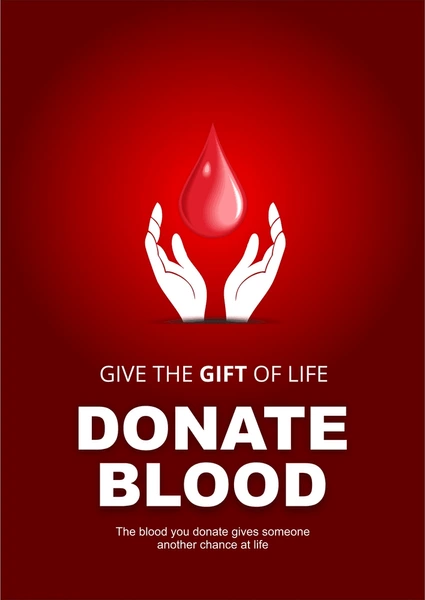

Welcome to BloodBank & Donor Management System
The need for Blood
Blood is a precious, life-sustaining, and non-manufacturable resource needed every two seconds. While 60% of the population is eligible to donate, less than 5% actually do, leading to constant shortages.
Blood tips
To prepare for a successful blood donation, hydrate well, eat iron-rich meals (like meat or spinach), get 7-8 hours of sleep, and wear clothing with sleeves that roll up easily. Avoid fatty foods, alcohol, and smoking beforehand. After donating, rest, drink extra fluids, and avoid heavy lifting for 5 hours
Who you could help
You are directly saving lives by supporting cancer patients, accident/burn victims, heart surgery recipients, organ transplant patients, and women with pregnancy complications. Donated blood is also critical for treating children with severe anemia, people with blood disorders like sickle cell or hemophilia, and patients requiring chronic, long-term transfusion support.
Blood Donor Names

Jatin
Blood group: O+
Age: 21
Jatin
Blood group: O+
Age: 21
Jatin
Blood group: O+
Age: 21
BLOOD GROUPS

Blood groups are classifications of blood based on the presence or absence of inherited antigenic substances
on the surface of red blood cells (A, B, and Rh factor). The primary systems are ABO (types A, B, AB, O) and
Rh (positive or negative), creating eight main types critical for transfusion safety. O negative is the universal
donor, while AB positive is the universal recipient.
Key Blood Group Details:
- ABO System: Defined by antigens A and B on red blood cells: Type A (A antigen), Type B (B antigen),
Type AB (both), and Type O (neither). - Rh Factor: Blood is further classified as positive (+) if the Rh protein is present, or negative (-) if
absent, resulting in 8 main types: A+, A-, B+, B-, O+, O-, AB+, and AB-. - Compatibility: In emergencies, O- blood can be given to anyone (universal donor), whereas AB+
individuals can receive any blood type (universal recipient). - Frequency: O positive is the most common (36%), while AB negative is the rarest (1%), says the
NHS Blood Donation.